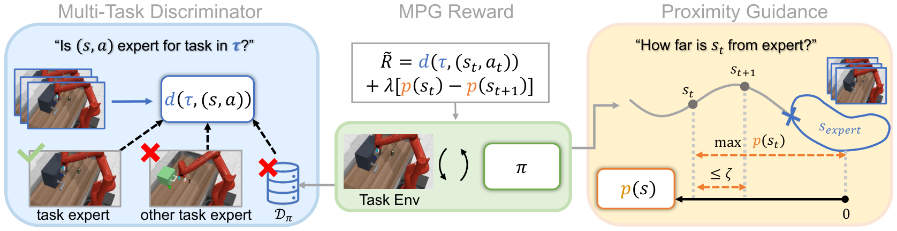
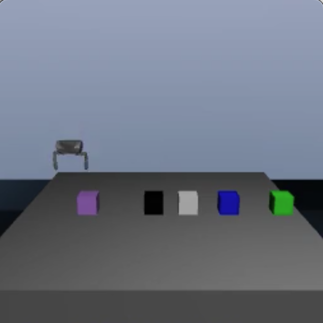
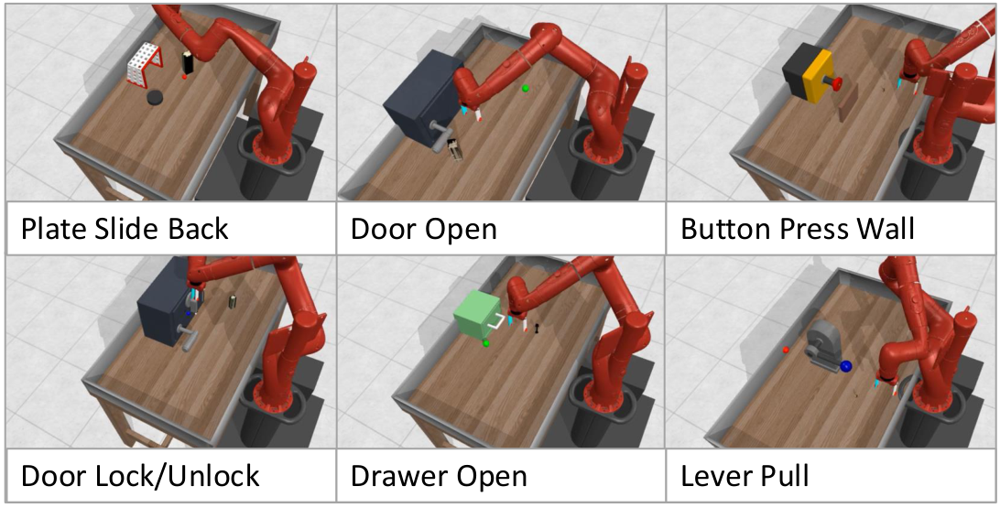
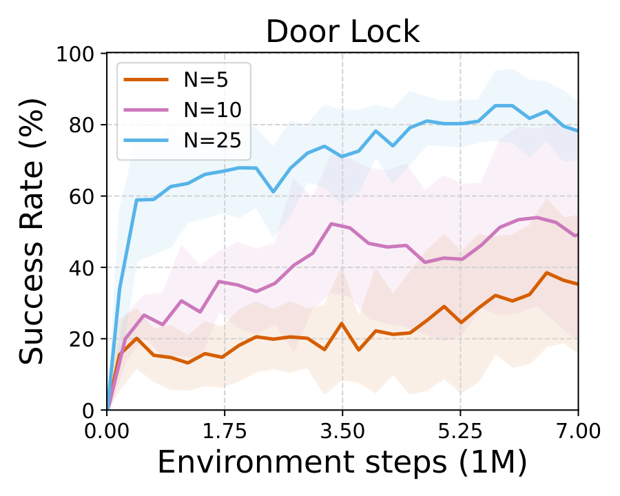
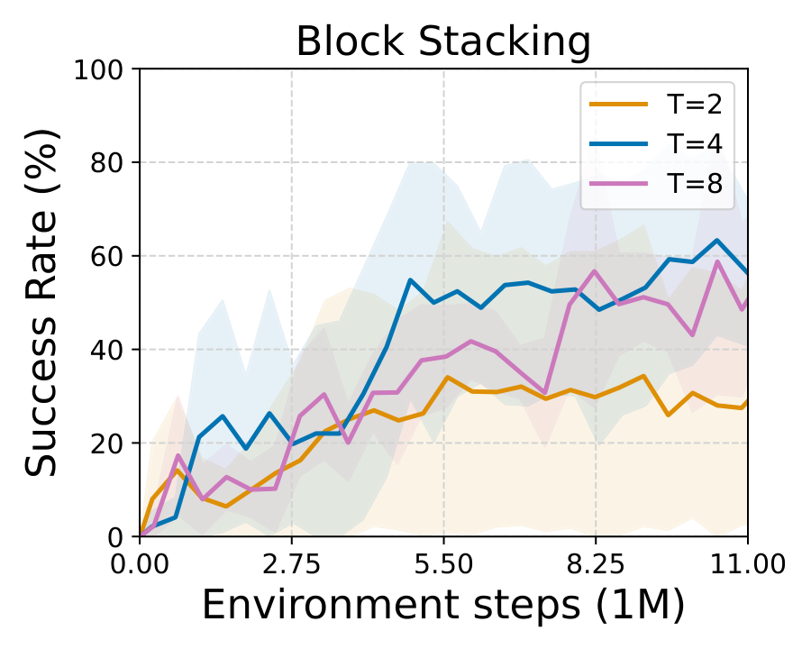
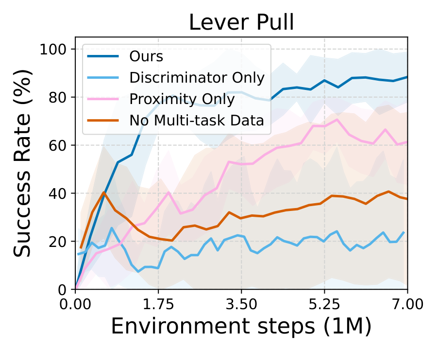
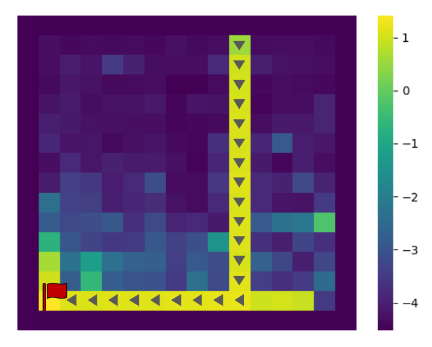
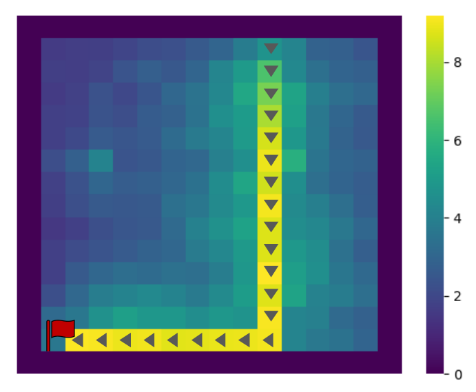

MPG learns a new task from limited demonstrations by decomposing the reward function into two synergistic components: a multi-task discriminator that transfers knowledge across related tasks, and a proximity function that provides corrective guidance when the agent deviates from expert behavior. Together, these components produce a generalizable and informative reward for effective few-shot IRL.

Our approach learns a two-part reward function: a multi-task discriminator approximates the expert distribution, and a proximity reward estimates distance to expert states for corrective guidance.
To generalize beyond few-shot demonstrations, our key insight is twofold: demonstrations from other tasks can be leveraged to infer the expert distribution of a new task, and online interaction can be used to estimate temporal distance to this distribution, providing corrective guidance when the agent deviates.
We propose a demonstration-conditioned discriminator that predicts whether a state-action pair is expert for a given task. Trained on both target and multi-task demonstrations, it transfers shared structure across tasks to recognize expert behavior under diverse intra-task variations. The discriminator score d(s, a) is used directly as a reward to encourage expert-consistent behavior.
To provide informative rewards in non-expert states, we introduce a proximity function p(s) that estimates temporal distance to the expert state distribution. It is trained with temporal consistency constraints inspired by quasimetric learning, anchoring expert states at zero proximity and enforcing p(st) ≤ p(st+1) + ζ along policy transitions.
The full reward integrates expert recognition and proximity guidance:
R̃(st, at, st+1) = d(st, at) + λ [p(st) − p(st+1)]
The policy is optimized with standard RL (PPO) using this decomposed reward. At each iteration, the agent collects transitions, updates the discriminator and proximity function, and improves the policy.
FM-IRL reflects a practical robotics scenario: multi-task expert demonstrations are often available, but interaction with multi-task training environments is difficult to obtain. The agent must learn a new target task using only:
Unlike meta-IRL, FM-IRL does not require access to multi-task environments. Unlike standard imitation learning, MPG learns a reward function that supports online policy optimization and recovery from unseen states.
We evaluate MPG on navigation and manipulation tasks with substantial intra-task variation:
(a) Maze2D (D4RL): The agent navigates to a fixed goal location among four fixed objects. Intra-task variation comes from the agent's random starting position.
(b) Block Stacking: The agent picks up a block of one color and places it on a block of another color, with random initial block positions creating variation.
(c) FactorWorld: A multi-task benchmark of robot manipulation tasks with variations in object position, table position, distractor objects & positions, and arm position. Each task additionally exhibits distinct dynamics.
Maze2D

Block Stacking

FactorWorld
MPG achieves the highest mean success rate on eight of the nine tasks. Across all tasks, MPG improves over the strongest per-task baseline by an average of 24.7 percentage points in success rate.
| Method | Maze2D | Block Stacking |
Drawer Open |
Door Lock |
Door Unlock |
Plate Slide Back |
Door Open |
Lever Pull |
Button Press Wall |
|---|---|---|---|---|---|---|---|---|---|
| GAIL | 53.2 ± 37.7 | 25.9 ± 43.9 | 17.7 ± 10.9 | 22.0 ± 6.3 | 43.9 ± 17.3 | 35.5 ± 21.4 | 50.2 ± 34.1 | 52.2 ± 45.1 | 22.2 ± 9.2 |
| MT-AIRL | 42.9 ± 12.7 | 9.1 ± 16.1 | 25.3 ± 4.6 | 33.0 ± 10.8 | 32.6 ± 17.4 | 19.3 ± 13.2 | 26.4 ± 12.5 | 22.7 ± 19.4 | 23.4 ± 11.7 |
| PEMIRL | 15.4 ± 8.4 | 0.7 ± 2.0 | 34.2 ± 11.7 | 15.4 ± 5.6 | 7.1 ± 3.4 | 13.3 ± 1.5 | 4.5 ± 6.3 | 5.9 ± 3.8 | 2.5 ± 3.5 |
| BC | 53.6 ± 16.2 | 22.0 ± 19.8 | 30.5 ± 1.6 | 37.3 ± 16.0 | 28.7 ± 25.0 | 30.5 ± 8.4 | 49.3 ± 23.5 | 44.5 ± 21.3 | 38.0 ± 5.0 |
| DemoConditioned-BC | 15.4 ± 11.1 | 0.4 ± 0.7 | 57.2 ± 21.6 | 52.0 ± 16.7 | 61.4 ± 20.1 | 28.9 ± 4.9 | 47.4 ± 24.8 | 34.7 ± 22.0 | 69.0 ± 25.6 |
| Transformer-BC | 21.5 ± 7.5 | 5.1 ± 9.2 | 66.4 ± 23.0 | 35.9 ± 14.9 | 44.6 ± 16.3 | 33.7 ± 8.3 | 25.7 ± 38.3 | 8.6 ± 4.7 | 51.3 ± 24.9 |
| SQIL | 51.5 ± 5.4 | 6.0 ± 11.4 | 10.8 ± 12.1 | 15.8 ± 2.5 | 6.0 ± 0.0 | 14.6 ± 8.7 | 3.7 ± 0.6 | 14.8 ± 11.3 | 6.4 ± 4.2 |
| DVD | 31.7 ± 33.5 | 0.0 ± 0.0 | 9.0 ± 8.9 | 24.8 ± 4.1 | 14.9 ± 15.6 | 12.8 ± 5.0 | 13.5 ± 5.9 | 12.2 ± 11.2 | 12.2 ± 6.3 |
| Goal Proximity | 96.0 ± 2.8 | 1.0 ± 2.0 | 7.4 ± 7.3 | 14.8 ± 5.6 | 7.2 ± 6.8 | 27.6 ± 5.1 | 4.6 ± 9.0 | 0.0 ± 0.0 | 12.3 ± 22.5 |
| Ours | 94.1 ± 3.6 | 61.6 ± 19.9 | 94.1 ± 2.2 | 57.6 ± 31.8 | 78.6 ± 22.0 | 63.9 ± 23.7 | 97.0 ± 1.1 | 93.2 ± 3.0 | 90.5 ± 5.8 |
Comparison of mean policy success rates (%) under the FM-IRL setting across nine navigation and manipulation tasks. We report 95% confidence intervals over five random seeds. Best and second-best mean performances on each task are shown in bold and underlined, respectively.
MPG vs. IRL baselines: GAIL, MT-AIRL, and PEMIRL underperform (35.9%, 26.1%, and 11.0% average success), struggling to leverage heterogeneous data or paying a high meta-training sample cost.
MPG vs. IL baselines: BC variants are relatively strong—DemoConditioned-BC is the best baseline at 40.7% average success—suggesting reward inference is harder than direct policy learning here. SQIL reaches only 14.4% average success due to its sparse reward, except on Maze2D where the environment configuration is fixed.
MPG vs. discriminator/proximity baselines: GoalPro does well on Maze2D (96.0%) but only 19.0% on average; DVD reaches 14.6%, as its fixed pre-trained reward is easily exploited.
Performance improves with more target demonstrations and with greater task diversity in the multi-task dataset, though gains plateau once a moderate level of diversity is reached.

Effect of the number of target demonstrations.

Effect of the number of tasks in the multi-task dataset.
We ablate the two parts of our reward function by training policies with either a discriminator only reward or a proximity only reward. While each component individually provides benefits, combining both yields the best performance. Removing the multi-task dataset (no multi-task data) also degrades performance, indicating that information from related tasks is important for generalization.
We further illustrate the two components in a simple empty Minigrid environment (below). The red flag indicates the goal and arrows show the expert demonstration. Lighter colors correspond to higher rewards. The two parts of our reward function provide complementary and informative learning signal: the discriminator generalizes to certain goal-reaching paths (e.g., directly above the goal), while the proximity provides a smooth gradient in non-expert regions.

Ablation on Lever Pull.

Discriminator reward heatmap.

Proximity reward heatmap.
@article{liu2026generalize,
title={Generalize and Guide: Decomposing Rewards for Few-Shot Inverse Reinforcement Learning},
author={Liu, Ziyi and Zhang, Grace},
journal={arXiv preprint arXiv:2607.17760},
year={2026}
}